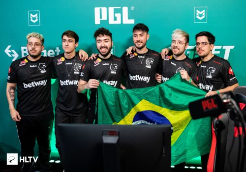

Principais Times do Brasil
Pequena contextualização desta lista
Abaixo citarei algumas das principais equipes de e-sports no Brasil, é importante citar que a lista não tem uma ordem exata, os times só estão separados por ordem alfabética, e também é importante deixar claro que todas essas equipes disputam em diversos jogos diferentes, porém só estarei citando os títulos dos jogos em que essas equipes são mais focadas, para não ficar uma lista gigantesca. Agora, sem mais demoras, vamos para a lista!
Black Dragons
A equipe “Black Dragons” é uma das mais antigas instituições de e-sports fundadas no Brasil, sendo criada em 1997. A equipe sempre teve um foco em jogos de FPS (First Person Shooter, os populares jogos de tiro em primeira pessoa). Em 2017 o time anunciou sua entrada no cenário competitivo do jogo “Rainbow Six”, que virou o foco principal da equipe, conquistando alguns títulos importantes. A equipe acumula mais de 75 mil seguidores no twitter e 258 mil no instagram.

Títulos Importantes (No Rainbow Six)
Pro League Year 2 Season 1 - Latin America (2017)
Brasileirão 2017 - Season 1
Pro League Year 2 Season 3 - Latin America (2017)
Copa do Brasil - Season 2021: Stage 3
FURIA
A “FURIA” é um dos times mais famosos do Brasil atualmente, principalmente por seus desempenhos em jogos de FPS, focado mais em “CS:GO”. O time chegou muito perto de vencer o Major de CS:GO de 2022 (primeiro realizado no Brasil, clique aqui para ver mais sobre esse campeonato), caindo apenas nas semifinais. A equipe tem expressivos 530 mil seguidores no twitter e 598 mil no instagram.

Títulos Importantes (CS:GO)
ESL Brasil Premier League Season 5 (2018)
ESEA Season 30: Premier Division - North America (2019)
ESEA Season 31: Global Challenge (2019)
EMF CS:GO World Invitational 2019
Arctic Invitational 2019
DreamHack Masters Spring 2020: North America
DreamHack Open Summer 2020: North America
ESL Pro League Season 12: North America (2020)
Elisa Invitational Summer 2021
PGL Major Antwerp 2022: American RMR